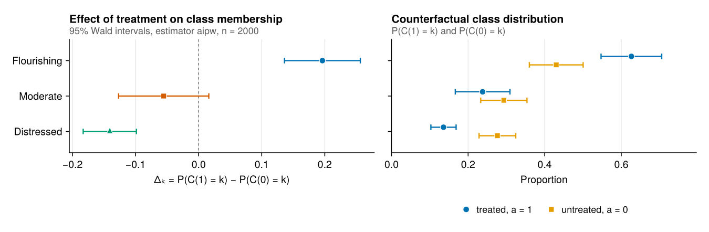
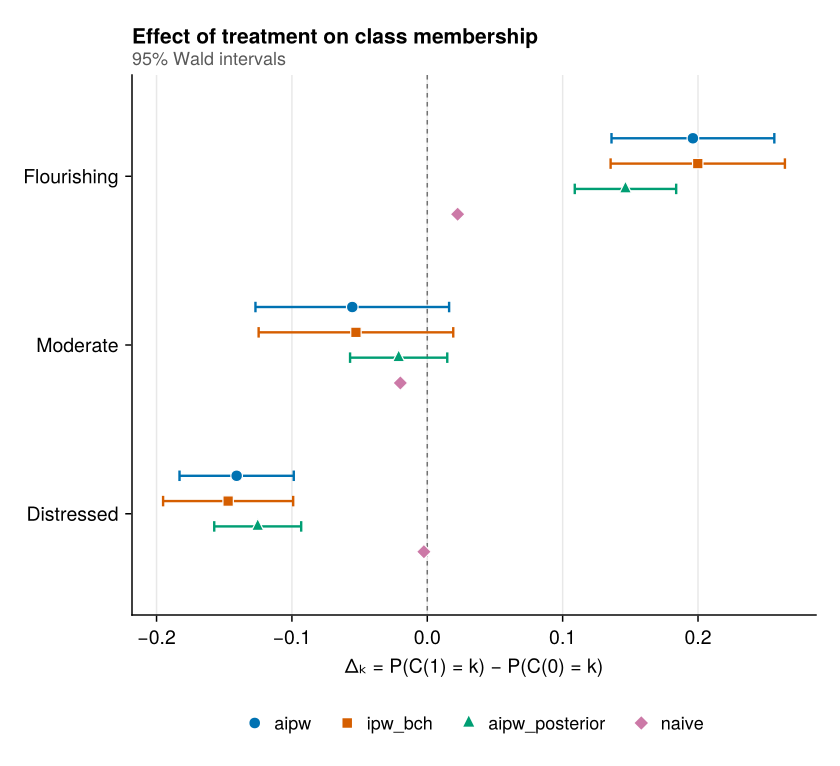
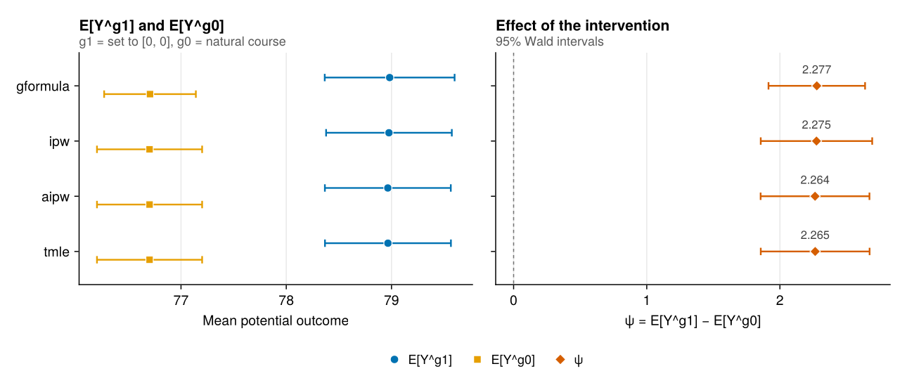
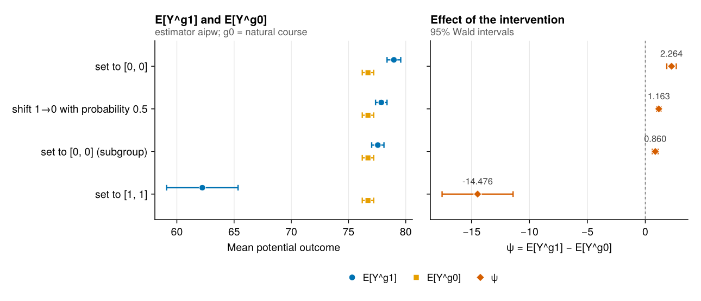
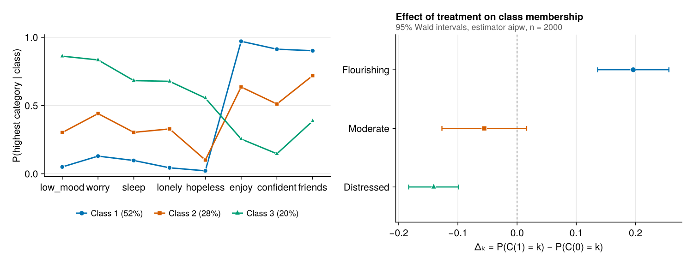

Plotting
effectplot and interventionplot draw the results of intervene_membership and intervene_effect with Makie. Makie is a weak dependency: the methods are in the package extension LatentClassCausalMakieExt, loaded as soon as a Makie backend is loaded (using CairoMakie for files, using GLMakie for interactive windows). The figures share the theme and the colour-blind-safe Okabe–Ito colours of LatentMixtures.jl (LatentMixtures.mixturetheme, LatentMixtures.mixturepalette), whose own plots (profileplot, classsizeplot, …) apply to the measurement model. The effect and counterfactual-probability figures correspond to autoplot() types "effect" and "probabilities" of the R package latentclasscausal.
The figures below use the example datasets programme and ace_study (see Datasets).
using LatentMixtures, LatentClassCausal, CairoMakie
CairoMakie.activate!(type = "png", px_per_unit = 1.5)
CairoMakie.enable_only_mime!(MIME"image/png"()) # PNG figures on this pageTreatment effects on latent classes
Did the school programme change the shares of the three wellbeing classes?
p = dataset("programme")
m = lca(p[:, [:low_mood, :worry, :sleep, :lonely, :hopeless, :enjoy, :confident, :friends]], 3)
X = Matrix{Float64}(p[:, [:female, :age, :low_ses, :distress, :belonging]])
r = intervene_membership(m, p.programme, X)
labels = ["Flourishing", "Moderate", "Distressed"]
effectplot(r; counterfactual = true, labels)
Several estimators on the same data, side by side (the naive estimator, which ignores classification error and confounding, has no standard errors; here it misses the effect because participants were more distressed at baseline):
rs = [intervene_membership(m, p.programme, X; estimator = e) for e in (:aipw, :ipw_bch, :aipw_posterior, :naive)]
effectplot(rs; labels)
Interventions on exposures
Would preventing childhood abuse and neglect (ace1, ace2) improve adult self-rated health? Four estimators of the same effect (true value +2.00 points):
a = dataset("ace_study")
A = Matrix{Int}(a[:, r"^ace"])
Xa = Matrix{Float64}(a[:, [:age, :female, :parent_edu]])
health = Float64.(a.health)
ri = [intervene_effect(health, A, Xa, [1, 2], setto([0, 0]); estimator = e, B = 50)
for e in (:gformula, :ipw, :aipw, :tmle)]
interventionplot(ri)
Different interventions (contrasts against the natural course) in one figure: prevent both, halve their prevalence, prevent both only where parents had at most 10 years of education, and the harmful contrast of exposing everyone:
gs = (setto([0, 0]), shift(0.5), subgroup(setto([0, 0]), a.parent_edu .<= 10), setto([1, 1]))
interventionplot([intervene_effect(health, A, Xa, [1, 2], g) for g in gs])
Every function returns a Makie.Figure (save("effects.pdf", fig)), and accepts a GridPosition as first argument to draw into an existing figure:
fig = Figure(size = (1000, 380))
profileplot(fig[1, 1], m) # LatentMixtures: the measurement model
effectplot(fig[1, 2], r; labels)
fig
Functions
LatentClassCausal.effectplot — Function
effectplot(r::LCCResult; level = 0.95, labels = nothing, counterfactual = false,
figure = (;), theme = LatentMixtures.mixturetheme()) -> Makie.Figure
effectplot(rs::AbstractVector{LCCResult}; names = nothing, kwargs...) -> Makie.Figure
effectplot(pos::Makie.GridPosition, r; kwargs...) -> Makie.FigureForest plot of the effects of the treatment on latent class membership, Δₖ = P(C(1) = k) − P(C(0) = k), with Wald confidence intervals from the robust (influence-function) standard errors r.se and a reference line at zero.
Arguments
r::LCCResult: a result ofintervene_membership; or a vector of results (e.g. several estimators on the same data), drawn side by side in different colours.
Keywords
level = 0.95: confidence level,Δₖ ± z·SE. Estimators without standard errors (:or,:naive,:ipw_modal) are drawn without intervals.labels = nothing: class labels; default"Class 1", ….counterfactual = false(single result): add a second panel with the counterfactual class distributionsP(C(1) = k)andP(C(0) = k)(r.psi1,r.psi0) and their intervals.names = nothing(vector of results): legend entries; default the estimator names.figure = (;): keyword arguments forMakie.Figure(e.g.size = (800, 400)).theme = LatentMixtures.mixturetheme(): the Makie theme.
Returns
A Makie.Figure (with a GridPosition, the figure that contains it).
Examples
using LatentMixtures, LatentClassCausal, CairoMakie
# programme: effect of a school mental-health programme on latent wellbeing classes
p = dataset("programme")
m = lca(p[:, [:low_mood, :worry, :sleep, :lonely, :hopeless, :enjoy, :confident, :friends]], 3)
X = Matrix{Float64}(p[:, [:female, :age, :low_ses, :distress, :belonging]])
r = intervene_membership(m, p.programme, X)
labels = ["Flourishing", "Moderate", "Distressed"]
effectplot(r; counterfactual = true, labels) # P(C(1) = k) against P(C(0) = k)
# corrected estimators agree; the naive comparison is biased towards zero
fig = effectplot([intervene_membership(m, p.programme, X; estimator = e) for e in (:aipw, :ipw_bch, :naive)];
labels)
save("effects.png", fig)Notes
Needs a Makie backend (using CairoMakie or using GLMakie); without one an error says so. Classes are those of the measurement model; use align_classes first to compare results across fits.
LatentClassCausal.interventionplot — Function
interventionplot(r::InterventionResult; level = 0.95, names = nothing, figure = (;),
theme = LatentMixtures.mixturetheme()) -> Makie.Figure
interventionplot(rs::AbstractVector{InterventionResult}; kwargs...) -> Makie.Figure
interventionplot(pos::Makie.GridPosition, r; kwargs...) -> Makie.FigureThe estimates of an intervention on exposures: left, the potential outcome means E[Y^{g1}] and E[Y^{g0}]; right, the effect ψ = E[Y^{g1}] − E[Y^{g0}] with a reference line at zero; all with Wald confidence intervals. A vector of results (e.g. the g-formula, IPTW, AIPW and TMLE on the same data, or several interventions) is drawn one row per result.
Arguments
r::InterventionResult: a result ofintervene_effect, or a vector of them.
Keywords
level = 0.95: confidence level,estimate ± z·SE(no interval where the SE isNaN, e.g.:gformulawithB = 0).names = nothing: row labels; default the estimator, plus the interventions when they differ between the results.figure = (;),theme = LatentMixtures.mixturetheme(): as ineffectplot.
Returns
A Makie.Figure.
Examples
using LatentClassCausal, CairoMakie
# ace_study: would preventing childhood abuse and neglect (ace1, ace2) improve adult
# self-rated health? Four estimators of the same effect (true value +2.00 points).
a = dataset("ace_study")
A = Matrix{Int}(a[:, r"^ace"])
X = Matrix{Float64}(a[:, [:age, :female, :parent_edu]])
rs = [intervene_effect(Float64.(a.health), A, X, [1, 2], setto([0, 0]); estimator = e)
for e in (:gformula, :ipw, :aipw, :tmle)]
interventionplot(rs) # estimates 2.26–2.28; all four 95% intervals include the true +2.00Notes
Needs a Makie backend (using CairoMakie or using GLMakie).